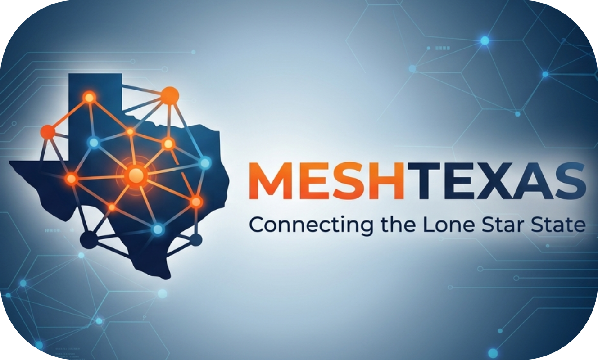

A community-run MeshCore LoRa radio network spanning Texas — no internet, no cell towers, no infrastructure required. Just radios talking to radios.

Cell towers down after a storm? No signal out on a trail? MeshTexas lets people send text messages phone-to-phone using small radios instead of the cell network — no towers, no monthly bill, no internet connection needed. Anyone can join: pick up a compatible radio, pair it with your phone, and you're on the mesh in minutes.
MeshCore devices use long-range LoRa radio to send encrypted messages between nodes — covering several miles per hop with affordable hardware.
Every node is a relay. Messages automatically find their way through the network, routing around outages without any central server.
All traffic is end-to-end encrypted using public-key cryptography. Each device generates its own identity — no accounts, no registration.
Runs on battery or solar. When cell towers and internet go down — storms, disasters, grid failures — the mesh keeps working.
Live packet visualization, node tracking, route analysis, and deep mesh analytics for the Texas network. Powered by CoreScope.
Real-time map of node positions, message routes, and advert paths across the Texas network, with line-of-sight and RF propagation tools.
Coverage map for the San Antonio region. Shows confirmed BIDIR, TX, RX, and DISC observations from wardriving and fixed observers.